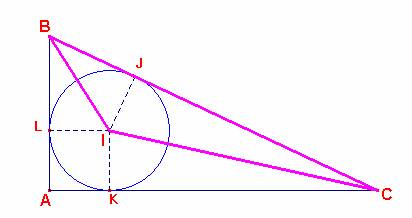

Problema 89
Demostrar que en un triángulo BAC, rectángulo en A, el producto de las distancias del centro I del círculo inscrito a los vértices B y C, es igual al producto de la hipotenusa BC por la distancia de I al vértice del ángulo recto.
Revista de Matemática Elemental,N.39 ( 4ª Serie) 1941, Tomo I, (p. 156-157,)
Solución de F. Damián Aranda Ballesteros profesor de Matemáticas del IES Blas Infante en Córdoba (21 de abril de 2003)

Dado el triángulo inicial, consideramos el triángulo BIC de área igual a S.
Tenemos por un lado que
S= 1/2.IB.IC.sen<BIC
=1/2.IB.IC.sen(180-(B/2+C/2))
Esto es:
S= 1/2.IB.IC.sen(180º
- 45º) = 1/2.IB.IC.sen 45º (I)
Por otro lado,
S= 1/2. BC.IJ; (II)
Como IJ = IK = IL = r; (r =inradio)
Como se sabe que IK= IA.sen45º entonces IJ= IA.sen45º (III)
Entonces igualando (I) y (II) y teniendo en cuenta (III) podemos expresar:
IB.IC = BC. IA c.q.d